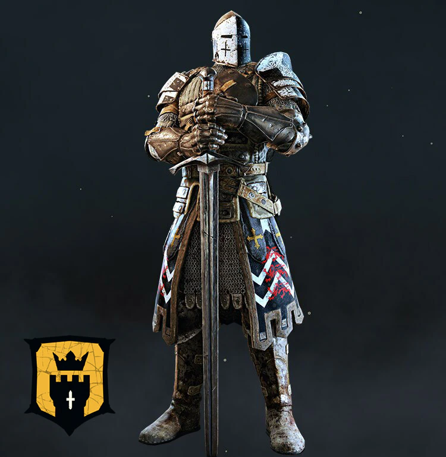
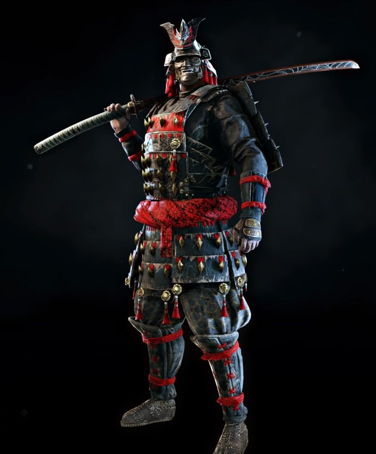
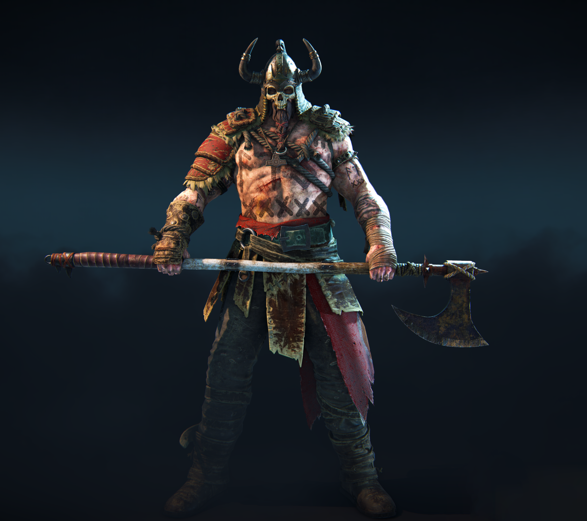

Jogabilidade e personagems
Jogabilidade
For Honor é um jogo de luta que tem o período medieval como cenário. Os jogadores podem escolher um
personagem a
partir de três facções: Legion, Chosen e Warborn que representam os cavaleiros medievais, os
samurais e
os
vikings, respectivamente. Existem várias classes, cada qual com as suas habilidades e armas. As
classes
podem
ser personalizadas como o género e a armadura usada.
O jogo funcionar de forma com que o usuário cria o seu personagem assim podendo escolher até três
tipos
de
classes, como Cavaleiros, Vikings e Samurais, cada classe tem seus próprios atributos, podendo
modificalos com o
passar do tempo de jogo.
Personagens

Os cavaleiros são personagens que Possuem seus atribustos equilibrados tanto em força quanto
velocidade e agilidade.

Os Samurais são personagens que possuem uma alta agilidade e velocidade mas não possuem uma
grande
força.

Os Vikings são personagens que possuem a maior força do jogo porém são extremamente lentos em
agilidade,
possuindo uma velocidade mediana.